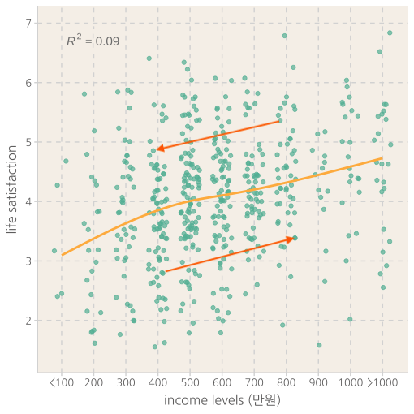
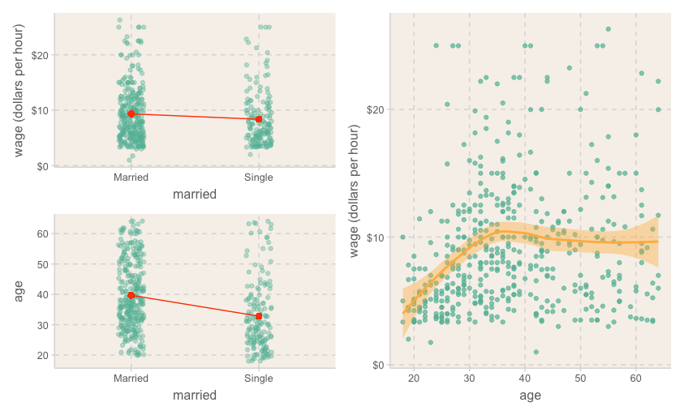
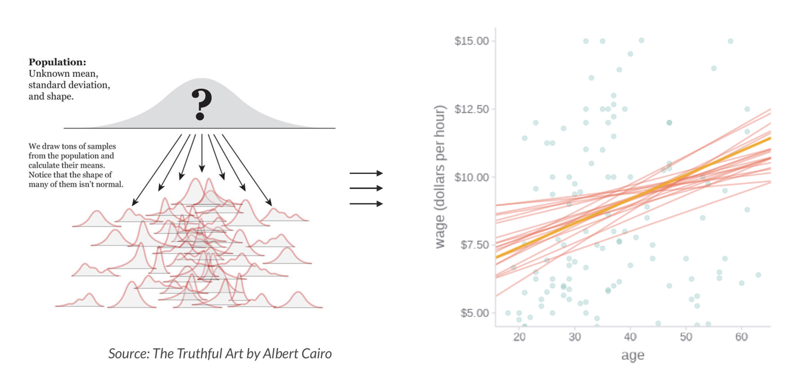
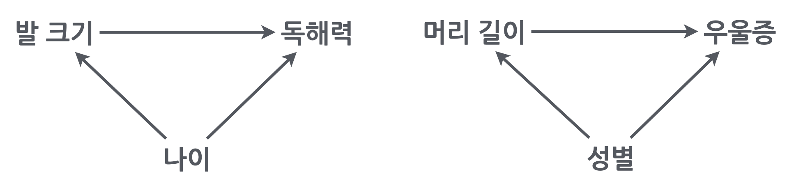
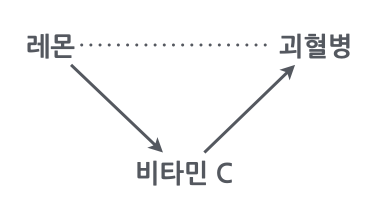
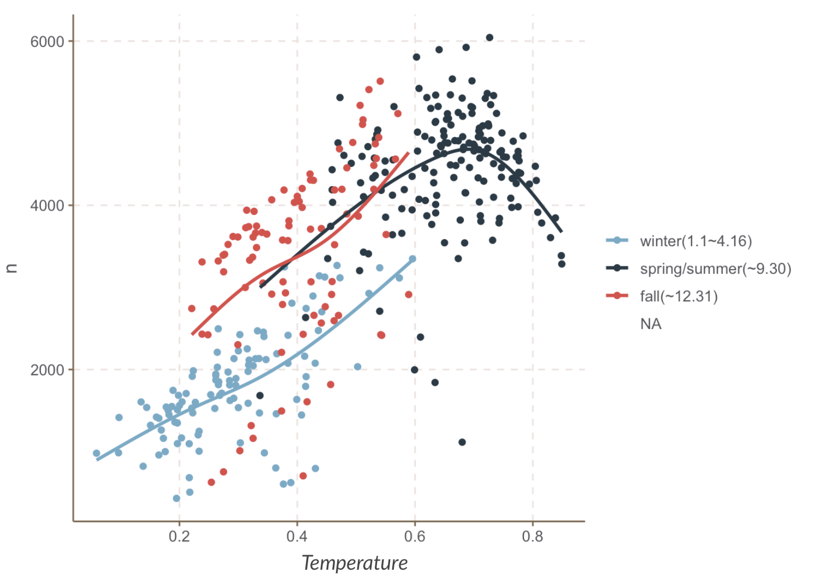
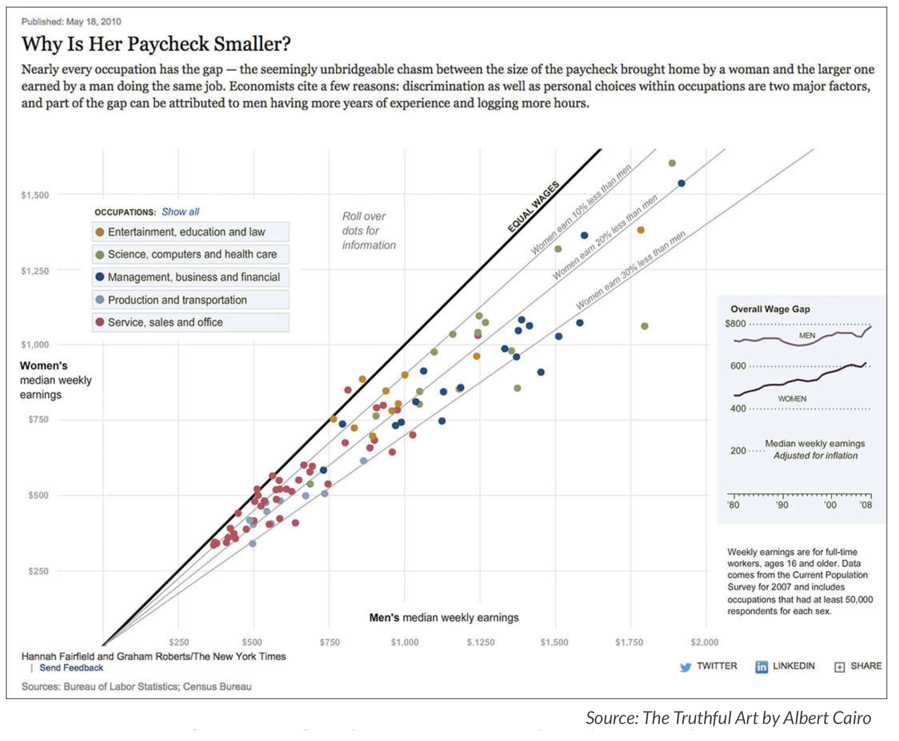

데이터 분석 및 시각화
2023 1학기
미래 데이터의 중요성
4차 산업혁명의 ‘원유’: 머신러닝, AI
- 다양한 소스들로부터 데이터 생성: 전지구적 개인과 환경에 대한 상세한 정보 발생
- 인터넷 & 통신 (SNS, 사진, 위치, 장소, 유동인구, 상품거래)
- 사물인터넷 (IoT), CCTV
- 스마트 팩토리, 파밍
- 게놈프로젝트, 생체정보: 인류, 실시간
- 의료서비스, 보건
- 자율주행차량: 내부, 외부
- 금융정보 및 흐름
- 사회 지표, 설문 조사: 고용, 물류, 직업, 연봉, 만족도 조사, 우울
유토피아 vs. 디스토피아?
- 초연결성, 투명성
- 완전한 감시와 통제
개인정보의 가치
- 정보의 주권, 매매, 웹3(Web3)
Data Science
소프트웨어 개발
데이터에 기반한 분석 위해 작동하도록 프로그래밍을 하여 운영되도록 하는 일
주로 전통적인 컴퓨터 사이언스의 커리큘럼에 의해 트레이닝
- 유튜브의 영상 추천
- 페이스북의 친구 매칭
- 스팸메일 필터링
- 자율주행
데이터 분석
하나의 구체적인 질문에 답하고자 함
다양한 소스의 정제되는 않은 데이터를 통합하거나 가공하는 기술이 요구
- DNA의 분석을 통해 특정 질병의 발병 인자를 탐색
- 유동인구와 매출을 분석해 상권을 분석
- 어떤 정책의 유효성을 분석에 정책결정에 공헌
- 교통 흐름의 지연이 어떻게 발생하는지를 분석, 해결책 제시
- 대부분의 경우 양쪽 모두에 걸쳐있음.
Data Analysis
- 오랜동안 여러 분야에서 각자의 방식을 개발
Computer Science
Statistics
Biostatistics
Economics
Epidemiology
Political Science
Engineering
- 서로 다른 용어를 쓰기도 하며, 그 분야에서 필요로하는 방식에 초점을 맞춤.
- 서로 의사소통이 거의 없었음.
- Data Science라는 이름하에 통합되어가는 과정 중
- 컴퓨터 사이언스의 경우, 주로 분류나 예측을 위한 이론과 툴들이 개발되는 반면,
- 사회과학자들은 예측에는 관심이 없으며, 변수들 간의 진정한 관계 혹은 인과관계를 탐구
- 현재 이 둘은 소위 cross-fertilization을 지향하며 같이 발전, 통합되어가고 있음.
Breiman, L. (2001). Statistical modeling: The two cultures (with comments and a rejoinder by the author). Statistical science, 16(3), 199-231.
- 본 강의에서는 분석의 기초를 적절한 밸런스를 갖춰 제시한 R for Data Science by Wickham & Grolemund의 전개 방식을 따르고자 함.
데이터를 분석한다는 것은?
예측 모델 vs. 관계/원인 분석
예측 모델
예측의 신속성과 정확성
Machine Learning 강점
Algorithmic
- 고양이인가 아닌가? 예측의 정확성
- 개인화된 추천 목록: 유튜브, 넷플릭스
- 시리의 답변
- 비즈니스 분석
관계/원인 분석
현상 본질과 매커니즘 파악
Statistical Models 강점 Parametric
- Q: 닭의 울음이 태양을 솟게 하는가?
- 돈과 행복: 패턴 vs. 예외

- 가난, 인종, 범죄
- 임금 차별

- 출산율의 감소
- 심리적 관성/편견 주의
- 분석가의 책임의식
- 두 가지는 서로 상보 관계!
데이터를 분석한다는 것은?
전통적인 분류
탐색적 분석 vs. 가설 검증
exploratory vs. confirmatory- 탐색적 분석
- 통찰 혹은 가설의 기초 제공
- 끼워 맞추기? 오류에 빠지기 쉬움
- 가설 검증
- 진위의 확률을 높임
- 탐색적 분석으로부터 온 가설은 재테스트
- 탐색적 분석
관찰 vs. 실험 데이터
observational vs. experimental- 당근과 시력?
- 커피의 효과?
- 남녀의 임금 차별?
기술적 vs. 추론적 분석
descriptive vs. inferential- 연봉과 삶의 만족도와 관계
- 두통약의 효능

통계적 사고 I
- 남녀 임금의 차이


Confounding
- 머리가 길면 우울증도 높다?
- 초등생이 발이 크면 독해력도 높다?

- Simpson’s paradox

통계적 사고 II
레몬과 괴혈병
남녀 연봉 차이의 원인?
- 직업 특성, 부서, 직급, 연령, 출산, 출세욕
- 직업 특성, 부서, 직급, 연령, 출산, 출세욕
수집된 데이터의 성격
Selection Bias
- 노인에 관한 데이터: 누가 사망했는가?
- 설문 데이터: 누가 참여했는가?
- 회사 내에서의 만족도 조사: 샘플 속성의 변화
- 코호트/특정세대의 특성: 그들의 특성인가?
데이터 시각화
Data Visualization
분석도구: 현미경, 연장도구
강점이자 약점


효과적/미적인 정보 전달 수단
효과적이고 임팩트있도록 infographics 
Interactive